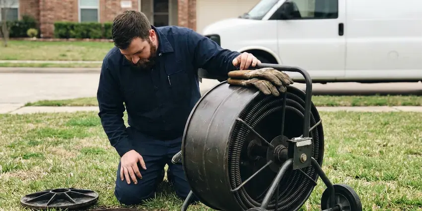

New Construction Plumbing in Columbus, OH
Building in Columbus, OH? Our crews handle underground, rough-in, top-out and trim so the next trade is never waiting on plumbing.
- Fast Project Starts
- Built to Code
- Prompt Project Consultations
- Licensed and Insured Contractor

Get Your New Build Plumbed Right on the First Pass in Columbus, OH.
Call (740) 449-7505 to set up a plan review with HRL Plumbing.
Plumbing for New Homes and Additions in Columbus, OH
HRL Plumbing installs complete plumbing systems for new homes and guest suites, from the underground work to the last trim piece. Each phase is tested before it is covered. The same crew that roughs in your flanges comes back to set the toilets, which cuts down on surprises at trim.
Our expertise includes:
- Gas piping and water heater venting, with pressure-tested final connections.
- Under-slab drain, waste and vent with sleeved penetrations.
- PEX-A home-run manifolds and copper mains sized to your fixture units.

Additional Plumbing Maintenance Services in Columbus, OH
Our maintenance and specialty plumbing services in Columbus, OH protect your home year-round and extend the life of every system.


Customers
Why Choose HRL Plumbing for New Construction Plumbing in Columbus, OH?
Builders tell us the biggest problem with other plumbers is no-shows. We text the super the evening before each phase. A pushed pour just moves our date, and we hold the new slot rather than giving it to another job. One rained-out pour costs you a day, not a two-week wait for a plumber.
- Tested Before Cover, Drains get a water or air test and supply lines get a pressure test before any inspection.
- Timely Completion, We coordinate with framers and electricians so the next trade is never waiting on us.
- Schedule Discipline, We book underground, top-out and trim dates when you sign and hold them.
Citywide Coverage
Rural lots outside Columbus often mean well water and a septic system instead of city utilities. That changes the plumbing plan. We pipe from the pressure tank, add sediment filtration if the well calls for it, and run the building drain to the septic designer's specified tank inlet elevation.
Experienced Team
Every plumber on a HRL Plumbing crew is licensed or working under a licensed plumber on site. Apprentices do not run jobs. A licensed plumber makes the layout calls and checks each crimp ring before the inspector is called.
Safety-First Approach
Before we dig near an existing house, we pothole to find the gas service and buried electrical. Locates miss things. Private lines like a sprinkler main, a detached garage feed, or an old propane line never show up on the public locate, so we hand-expose them before the machine digs.
Trusted Certified Columbus Plumbing Services Professionals
At HRL Plumbing, we are proud to offer certified plumbing services throughout Columbus, OH. Credentials matter in this trade. Every repair, install and maintenance visit follows strict safety and quality rules, and the plumbers doing the work carry recognized industry credentials.
Call Us Now PHCC Plumbing Contractor Recognition
PHCC Plumbing Contractor Recognition Better Business Bureau (BBB) Accreditation
Better Business Bureau (BBB) Accreditation Angi Certified Pro
Angi Certified Pro ISO 9001 Quality Management Certification
ISO 9001 Quality Management CertificationReliable New Construction Plumbing Services in Columbus, OH
Permits and Inspections for New Plumbing in Columbus, OH
Most new homes get a plumbing inspection at underground, another at top-out, and a final. Our crew schedules each inspection and is on site with the test running when the inspector arrives. Green tags go to the super. If the inspector writes a correction, we fix it the same day or the next morning so the slab or drywall date does not move.

Plumbing Rough-In Services in Columbus
Rough-in covers every pipe that ends up inside a wall or floor. Holes through bearing studs stay within the framing code limit, usually 40 percent of the stud width. Vents go up through the roof. Every trap arm is sized and sloped for the distance to its vent.
Preventing Common Ohio Plumbing Issues in New Builds in Columbus, OH
New construction in Ohio has to account for the ground and the water. Basements are standard in most homes, and many rely on sump pumps to handle groundwater away during wet periods. Sleeves go on every pipe through the slab or foundation so the pipe can move a little without cracking. Homeowners around Columbus often install a softener to protect water heaters and reduce spotting on fixtures. Supply material gets picked with that in mind.
Water Heater Setup for New Builds in Columbus
Tank or tankless, the venting decides the install location. A power-vent tank can run PVC out a sidewall, while an atmospheric tank needs a metal flue that goes up through the roof. We set the heater on a stand in a garage where code requires it. Every one gets a T&P line piped to an approved spot.
Gas Line Installation for New Construction in Columbus, OH
Gas piping is sized from the total BTU load and the longest run, using the tables in the fuel gas code. Undersize it and the furnace short-cycles or the tankless heater throws an error on a cold morning. Black iron or CSST goes in per the plans. Any CSST run is bonded to the grounding electrode system per the manufacturer.
Residential New Construction Plumbing in Columbus
Layout drives cost on a house. Grouping the kitchen, laundry and baths along one wet wall can cut a few hundred feet of pipe out of a plan. We point out those savings during plan review. Changing a bath location on paper costs nothing, while moving it after the slab is poured means a saw cut and a new drain trench.
In-Wall Plumbing Services in Columbus
Top-out is the second half of rough-in, after framing. Supply lines, drains and vents go through the framing and up to the roof, with stub-outs set to the cabinet drawings. Then the system gets tested. We fill the drains to the top fitting and leave a gauge on the supply so the inspector can see it hold.

Residential Plumbing for New Builds in Columbus
A new single-family house usually needs a 3/4-inch or 1-inch water service, a 4-inch building drain and somewhere between 20 and 40 fixture connections. Homeowners around Columbus often install a softener to protect water heaters and cut down on spotting on fixtures. We plan supply materials and any softener or filter loop around that water before rough-in starts. Pipe size comes from the fixture count. Undersized supply lines are the main reason a new house has weak showers when the dishwasher runs.
New Construction Plumbing Close By in Columbus, OH
Being local matters on a new build in Columbus because each jurisdiction has its own inspectors and utility rules. Some want a cleanout at the property line. Others want a set burial depth or a specific irrigation backflow device, which is easy to plan for and costly to miss. Those go into our layout from the start.
Searching for a new construction plumber near me in Columbus usually starts a week before forms go up. A crew lead can usually walk the lot within two days. With the plan set in hand, we mark stub locations on the form boards ahead of the concrete crew. The underground follows right after.
HRL Plumbing at a Glance
- Fully licensed plumbing team covering Columbus, OH
- Same-day appointments and 24/7 emergency response
- Upfront, flat-rate pricing before work begins
- 4.9-star rated by 673+ Ohio customers
Columbus Map
Columbus Information
- Population
- 913,175
- Area codes
- 614/740/380
- Service area
- Columbus and communities within 40 miles
- Nearby
- Dublin, Newark, Springfield, Mansfield
Pipe and layout decisions made before the slab is poured decide how the house performs for decades. Homeowners around Columbus often install a softener to protect water heaters and reduce spotting on fixtures. Supply material and any softener loop get planned for it.
Talk to a Plumber
Reach out to HRL Plumbing for reliable plumbing work done by licensed pros in Columbus, OH.
Our Specialized Plumbing Services in Columbus, OH
At HRL Plumbing, we handle the full list of plumbing services across Columbus, OH. From leak detection to full system installs, our team works fast and charges fair prices on homes and commercial properties alike. Explore our core services below:


How Our New Construction Plumbing Process Works in Columbus, OH
We plan our process around your build schedule, phase by phase.
Request a Quote
Call (740) 449-7505 or send your plans and fixture schedule. We return a bid that breaks out each phase.
Phase Scheduling
We set dates for each phase around your concrete and framing schedule. You get one point of contact.
Install, Test and Trim
Our crew installs each phase, tests it and meets the inspector. Final trim ends with every fixture set and tested.
Frequently Asked Questions About New Construction Plumbing in Columbus
Bathroom count drives the cost more than square footage does. A slab home is often a little cheaper to plumb than a basement home, because basement drains may need an ejector pump and the layout uses more vertical pipe. We price gas piping as its own line. Ask us for a number after we see your plans, since square-foot estimates miss too much to be useful.
We can run a dedicated return line during rough-in. Hot water then reaches distant bathrooms in seconds. Compared with a crossover valve at the sink, a dedicated return keeps the cold line cold and works faster. The pump needs an outlet.
We handle the plumbing permit work and inspections on our scope. Your builder usually pulls the main building permit. Our office then schedules each plumbing inspection, meets the inspector on site, and fixes any correction notice before the next trade needs that wall or slab.
Yes, our workmanship warranty carries past move-in for the term in your contract. Any leak at one of our fittings is on us. Damage from a nail through a pipe after we leave or a frozen hose bib with a hose left on is not a workmanship defect and is billed as a service call.
PEX-A is our default for water supply in Ohio homes. It tolerates hot water and avoids the pinhole leaks copper can develop in some water. We run drains in Schedule 40 PVC. Under slabs, we keep joints to a minimum and use long-sweep fittings at every change of direction so a cable or camera can get through later.
We do, mostly on custom homes. Our suggestions usually shorten pipe runs or improve water flow. Common ones include stacking a second-floor bath over the kitchen, moving the water heater closer to the main bath, and adding a recirculation line to the far end of the house. Small moves on paper save real pipe.
Yes, new construction plumbing in Columbus, OH requires a permit and inspections. The plumbing scope is usually part of the general building permit, though some jurisdictions issue a separate plumbing permit to the licensed contractor. Our office handles the plumbing side.
Yes, softeners are easy to plan in. Homeowners around Columbus often install a softener to protect water heaters and cut down on spotting on fixtures. The loop includes a bypass and a drain, and we usually keep the kitchen cold line and hose bibs on unsoftened water. A loop at rough-in is cheap.
What Our Customers Say About Our Plumbing Experts

Karen W.
After our third pinhole leak in copper, we stopped patching. HRL Plumbing gave us a written plan room by room and repiped the house in PEX while we stayed in it. The crew covered our floors every morning and cleaned up every night.
Repiping · Newark, OHDiane F.
My kitchen faucet had dripped for months and I finally got tired of hearing it at night. HRL Plumbing came out the next morning, replaced the cartridge and the O rings, and tightened a loose base that was letting water under the sink.
Faucet Repair · Springfield, OH
Nathan E.
Our tankless heater kept throwing an error code and shutting off mid shower. The tech flushed the heat exchanger, which was full of scale, and replaced a bad flow sensor. Hot water has been steady for half a year now.
Water Heater Repair · Mansfield, OH
Mark T.
The floor drain in our office break room backed up every few weeks. The plumber ran a cable, then put a camera down and found roots at a joint about thirty feet out. Seeing it on the screen made the decision easy.
Drain Cleaning · Columbus, OH
Kevin O.
Before buying our house I paid for a sewer camera inspection. HRL Plumbing found a belly in the line that held standing water about forty feet from the cleanout. We used the video to get the sellers to fix it before closing.
Sewer Camera Inspection · Dayton, OH
Laura S.
Our 40 gallon tank started leaking from the bottom after thirteen years. The tech hauled the old one out, set a new unit with a fresh expansion tank, and had hot water running in about four hours. He took the old tank with him too.
Water Heater Replacement · Dayton, OH